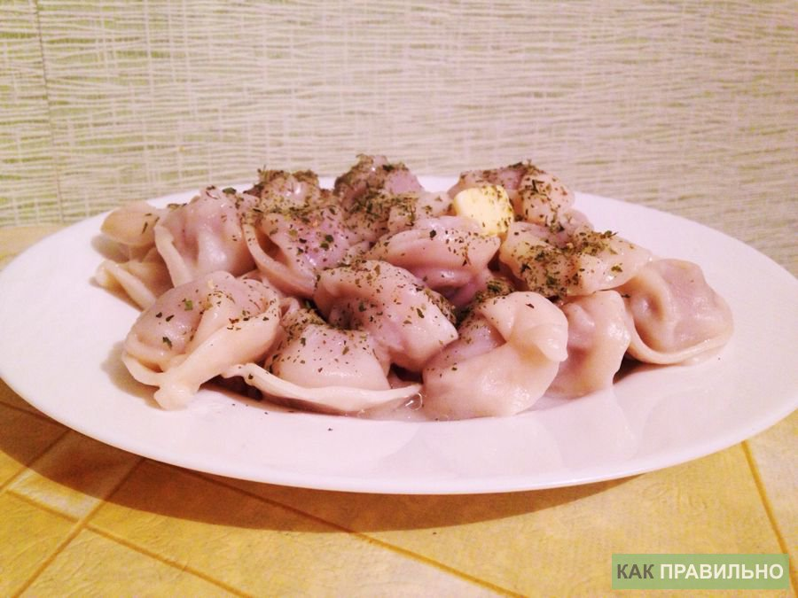

Пельмеша
СПОСОБ ПРИГОТОВЛЕНИЯ1. Для приготовления 1 кг пельменей вас понадобится кастрюля емкостью не менее чем 4 литра. Упаковка пльменей должна находиться в морозилке до тех пор пока вы не будете готовы положить их в кипящую воду. Заполните кастрюлю холодной водой из расчёта 3 литра воды на 1 кг пельменей.
2. Поставьте кастрюлю на плиту. Включите конфорку и дождитесь пока вода закипит. Потом откройте упаковку с пельменями и положите их в кипящую воду. Будьте острожны! Брызги кипятка могут ошпарить вам руку, не бросайте пельмени с большой высоты.
3. Добавьте в кастрюлю соль (1 чайную ложку) и подсолнечное масло (2 столовые ложки), чтобы пельмени не слиплись.
4. Наблюдайте за процессом. После того, как пельмени начнут всплывать, варите их еще 7-10 минут.
5. Выключите плиту и достаньте шумовкой пельмени. Разложите пельмени по тарелкам. 1 кг достаточно для 2-3 порций. Добавьте к пельмени сливочное масло (20 грамм), можете посыпать зеленью. Отдельно подайте майонез или сметану.

Приятного аппетита!
Больше информации здесь \/ \/ \/
И.Н.Ф.А